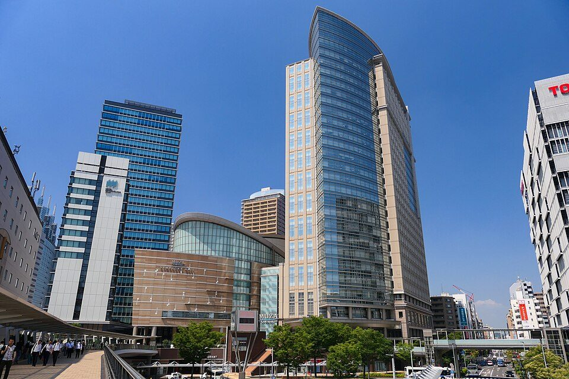
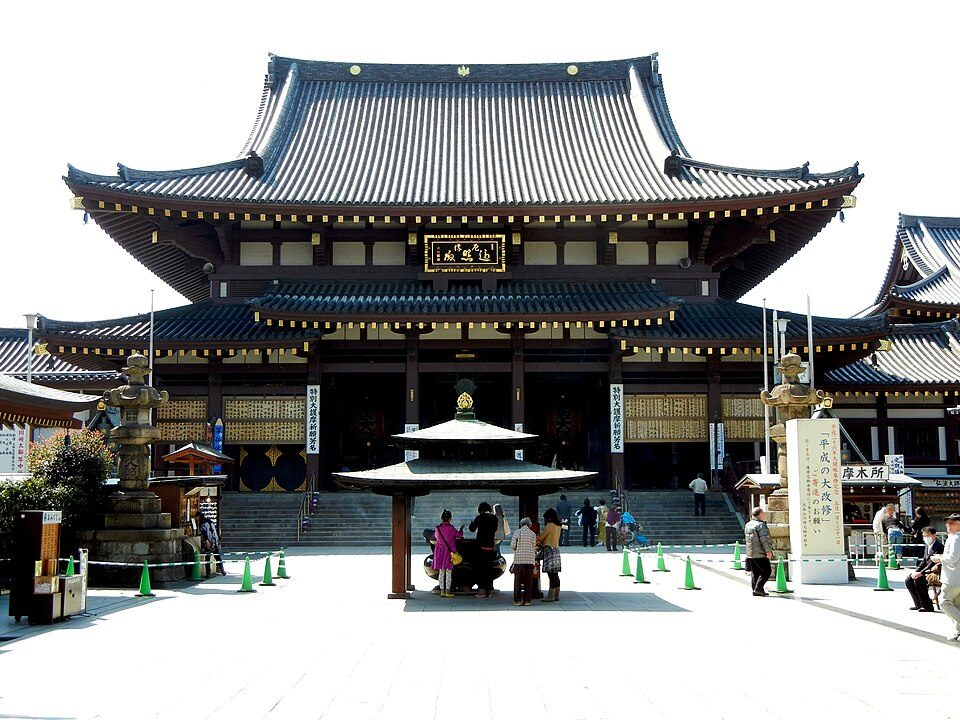
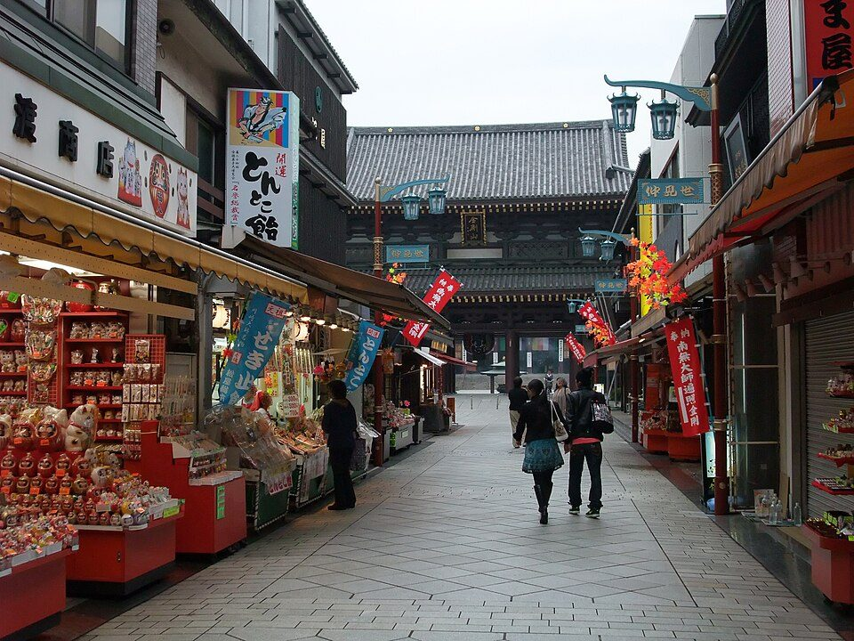

川崎駅周辺と川崎大師で食べたい店：老舗と名物、観光協会が紹介する店（2026年版）
要点まとめ

川崎駅の周辺と川崎大師で、食事やお茶に寄りたい店をまとめました。「おすすめ」は個人の口コミや点数ではなく、川崎市観光協会が紹介している店と、市などが認定する「かわさき名産品」を扱う店から選び、営業時間と価格はできるだけ各店の公式サイトで確かめています。営業時間や価格は変わることがあるので、数字は調査日時点のものです。特定の店をすすめるものではありません。
この記事での店の選び方
観光協会の「おでかけマップ」と「かわさき名産品」を根拠にした
川崎駅周辺の老舗
創業100年を超える蕎麦と割烹、70年近い洋食と、とんかつ
美濃戸は1914年創業。まるだいも100年を超える[5][6]
見方: 松屋総本店・松月庵・住吉は川崎大師の店（5章）、ほかは川崎駅周辺の店です。宮代商店は、みやだい倶楽部を運営する肉問屋の創業年です[14]。松屋総本店の最初の店は東京・深川で、川崎大師には支店として出店しました[12]。
| 店 | 料理・場所 | 営業時間など | 価格の例 |
|---|---|---|---|
| とんかつ和幸 川崎アゼリア本店 | とんかつ。川崎駅の地下街「川崎アゼリア」[4] | 11:00〜23:00、年中無休（施設の休みに準じる）[4] | ロースかつ御飯1,530円（税込）[17] |
| イタリア料理 モナリザン | イタリアン。東口から徒歩6分[7] | 11:00〜22:00（15〜17時は中休み）、12/31〜1/4休み[7] | 平日ランチの名物キャセロール1,480円（税込）[18] |
| 美濃戸 | 蕎麦。川崎区東田町[5] | 公式サイトが見つからず不明 | 観光協会の区分は1,000〜3,000円[5] |
| 鰻・割烹 まるだい | 鰻・会席。川崎区砂子[6] | 公式サイトが見つからず不明 | 観光協会の区分は昼3,000〜5,000円[6] |
| みやだい倶楽部 | すき焼き・しゃぶしゃぶ・陶板焼き。川崎区砂子[19] | 不明 | 観光協会の区分は昼1,000〜3,000円[19] |
くわしく
- とんかつ和幸は1958年に川崎で創業し、1号店は川崎駅ビルの地下に出した[3]
- マップは和幸の本店を「全国250店舗以上で展開」と紹介している[1]
- 和幸の価格は全店共通のメニューで、店舗によって違う場合がある[17]
- モナリザンは1955年に喫茶店として創業し、1964年に法人化した[15]
- マップはモナリザンを「昭和39年創業」と書くが、公式ではこれは法人化の年[1][15]
- 美濃戸は1914年創業の蕎麦店で、昼は半食の蕎麦がつく定食がある[5][1]
- まるだいは、大正レトロな店内で鰻や会席料理を出す、創業100年を超える老舗[6]
- みやだい倶楽部は、昭和7年創業の肉問屋・宮代商店の直営店[14][1]
川崎駅周辺のラーメン・ビール・カフェ
ニュータンタンメン、深夜まで開く中華、醸造所のビール
ニュータンタンメンは1964年創業。川崎のソウルフードと公式が書く[16][20]
元祖ニュータンタン酒場 川崎東口
ニュータンタンメン本舗の酒場の業態。川崎区砂子2-11-20[21][1]
月〜木17:00〜24:00、金・祝前日は27時まで。土日祝は昼も営業。定休日なし[21]
中華料理 天龍 銀座街店
11:00〜26:00。川崎区砂子1-1-1[23]
東海道BEER川崎宿工場
クラフトビールの醸造所にビアバーを併設。京急川崎駅から徒歩6分[24]
平日17:30〜22:00、土曜12:00〜22:00、日祝12:00〜21:00。火曜定休[24]
Cafe IBIS
古いビルを改装したカフェ。JR川崎駅から徒歩7分[25][1]
平日11時、土日9時開店。タコライス980円（税込）[25]
くわしく
- ニュータンタンメン本舗は川崎市・横浜市を中心に46店舗。創業者が昭和39年に創業した[20][16]
- マップの紹介は「モチモチの自家製麺にフワフワの溶き卵が絡みます」[1]
- 公式サイトに「川崎発祥」とはっきり書いた文は見つからなかった
- 本舗の川崎大師店（大師本町）もあり、月・火曜定休[21]
- 天龍の公式サイトは更新が古く、銀座街店の定休日と今の価格は確かめられなかった
- 東海道BEERは、川崎宿にかつて麦畑が広がっていたことにちなむとマップで紹介[1]
- 観光協会の価格帯の区分は、ニュータンタン酒場が1,000〜3,000円[26]
- 東海道BEERは、昼が1,000〜3,000円、夜が3,000〜5,000円の区分[27]
- ラゾーナ川崎プラザ（西口）の飲食店は11:00〜22:00が基本の営業時間[28]
川崎大師への行き方と混む日

京急川崎駅で大師線に乗り換え、川崎大師駅から徒歩8分
川崎大師の名物と店

久寿餅は天保のころからの名物。とんとこ飴は仲見世の音
久寿餅は小麦でんぷんを1年以上発酵させて蒸した餅[13]
| 店 | 名物 | 営業時間など | 価格の例 |
|---|---|---|---|
| 山門前 住吉 | 久寿餅。大正6年創業。店内でも食べられる[8] | 8:30〜17:00、不定休[8] | 独鈷久寿餅 2枚入900円（税込）[31] |
| 松屋総本店 | とんとこ飴。仲見世入口の本店[12] | 9:00〜17:00（季節で変わる）[13] | 開運とんとこ飴さらし324〜540円（税込）[12] |
| 大谷堂 | 釜あげわらび餅（純国産わらび粉）[32] | 9:00〜16:30（夏季）、不定休[32] | お土産パック600円[32] |
| つぼ焼き芋 甘い和 | 熟成つぼ焼き芋。表参道の店[33] | 11:00〜17:00、月・火曜定休[33] | 1本540円[2] |
| 石渡屋 | ごりやく焼きプリン。駅前のパン屋[34] | 日・月曜定休[34] | 1個200円、1日48個限定[2][34] |
| 松月庵 | 明治17年創業の蕎麦屋[2] | 11:00〜17:00、不定休（パンフレットの記載）[13] | 名産品の特選そばつゆ500円[13] |
おみやげ（かわさき名産品）
駅の近くで買える名産品と、駅の観光案内所
一部の名産品は、JR川崎駅北口のかわさききたテラスでも買える[2]
出かける前に確かめたいこと
営業時間・定休日・価格は変わることがあり、名産品パンフレットと店の公式サイトで食い違うものもありました。観光協会のマップも「所在地や営業等は変更になる場合がある」と注記しています[1]。毎月21日の縁日や正月は、川崎大師の周辺が混み合います（筆者の見解）。
今回確認できなかった点
- 美濃戸・まるだい・みやだい倶楽部の営業時間と定休日（店の公式サイトが見つからなかった）
- 天龍 銀座街店の定休日と今の価格
- ニュータンタンメンが「川崎発祥」であることの公式の記述
- 川崎大師の初詣の参拝者数と、仲見世の店の数
- マップに載っていた大衆酒場1店の公式情報
出典（36件）
閲覧日はいずれも2026年11月6日
- おでかけマップ AROUND KAWASAKI STATION（2024年3月）（川崎市観光協会（協力: 川崎市ほか））
- かわさき名産品（川崎市観光協会）
- 企業理念・沿革（和幸グループ（とんかつ和幸））
- 和幸 川崎アゼリア本店（和幸グループ（とんかつ和幸））
- 川崎の美味しいもの探訪｜美濃戸（川崎市観光協会）
- 川崎の美味しいもの探訪｜鰻・割烹 まるだい（川崎市観光協会）
- 公式トップ（店舗情報）（イタリア料理 モナリザン）
- 公式トップ（店舗案内）（川崎大師 山門前 住吉）
- 交通アクセス（川崎大師平間寺）
- 1月の行事（川崎大師平間寺）
- 川崎の美味しいもの探訪｜イタリア料理 モナリザン（川崎市観光協会）
- 公式サイト（会社概要・とんとこ飴さらし）（株式会社松屋総本店）
- 「かわさき名産品」パンフレット（かわさき名産品認定事業実行委員会（川崎市観光協会サイト掲載））
- 組織概要（株式会社宮代商店）
- コンセプト（沿革）（イタリア料理 モナリザン）
- ニュータンタンメンとは（元祖ニュータンタンメン本舗（株式会社みなもと））
- メニュー（和幸グループ（とんかつ和幸））
- ランチ（イタリア料理 モナリザン）
- 川崎の美味しいもの探訪｜みやだい倶楽部（川崎市観光協会）
- 公式トップ（元祖ニュータンタンメン本舗（株式会社みなもと））
- 店舗一覧（元祖ニュータンタンメン本舗（株式会社みなもと））
- 川崎の美味しいもの探訪｜中華料理 天龍 銀座街店（川崎市観光協会）
- 店舗案内（中華料理 天龍）
- 公式トップ（東海道BEER川崎宿工場）
- 公式トップ・メニュー（Cafe IBIS）
- 川崎の美味しいもの探訪｜元祖ニュータンタン酒場 川崎東口（川崎市観光協会）
- 川崎の美味しいもの探訪｜東海道BEER川崎宿工場（川崎市観光協会）
- ラゾーナ川崎プラザ 公式サイト（三井ショッピングパーク）
- 年中行事（川崎大師平間寺）
- 川崎大師について（川崎大師平間寺）
- 独鈷 久寿餅（通販）（川崎大師 山門前 住吉）
- 公式トップ（川崎大師 大谷堂）
- 公式トップ（つぼ焼き芋 甘い和）
- 公式トップ（石渡屋）
- 久寿餅のいわれ（川崎大師 山門前 住吉）
- 店舗・催事のご案内（菓子匠 末広庵）
写真・画像の出典（3件）
- JR川崎駅の西口
写真: MaedaAkihiko／Wikimedia Commons（CC BY-SA 4.0） - 川崎大師平間寺の大本堂
写真: ペン太／Wikimedia Commons（CC BY 2.5） - 川崎大師の仲見世と山門
写真: Reggaeman／Wikimedia Commons（CC BY-SA 3.0）